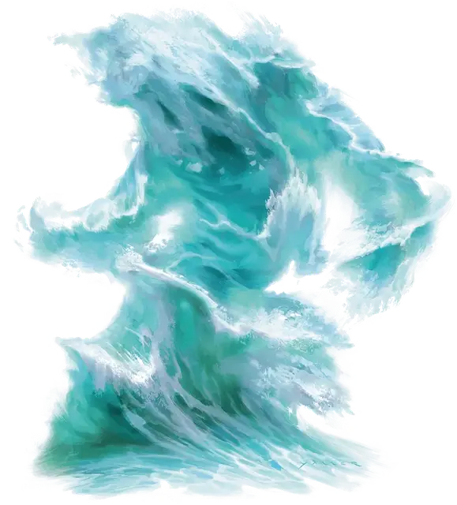

Водяной элементаль
Water Elemental
Большой Элементаль, нейтральный

Класс Доспеха 14 (природный доспех)
Хиты 114 (12к10 + 48)
Скорость 30 футов, плавая 90 футов
| мод | спас | ||
|---|---|---|---|
| СИЛ | 18 | +4 | +4 |
| ЛОВ | 14 | +2 | +2 |
| ТЕЛ | 18 | +4 | +4 |
| мод | спас | ||
|---|---|---|---|
| ИНТ | 5 | −3 | −3 |
| МДР | 10 | +0 | +0 |
| ХАР | 8 | −1 | −1 |
Сопротивление урону кислота; дробящий, колющий, рубящий от немагических атак
Иммунитет к урону яд
Иммунитет к состояниям сбивание с ног, паралич, отравление, опутанность, окаменение, истощение, захват, бессознательность
Чувства тёмное зрение 60 футов, пассивное Восприятие 10
Языки Акван
Опасность 5 (1800 опыта)
Бонус мастерства +3
Среда обитания Горы, Арктика
Особенности
Водяное тело. Элементаль может входить в пространство враждебных существ и останавливаться там. Он может перемещаться сквозь пространство шириной в 1 дюйм без протискивания.
Замерзание. Если Элементаль получает урон холодом, он частично замерзает: его скорость уменьшается на 20 футов до конца его следующего хода.
Действия
Мультиатака. Элементаль совершает два Размашистых удара.
Размашистый удар. Рукопашная атака оружием: +7 к попаданию, досягаемость 5 футов, одна цель. Попадание: 13 (2к8 + 4) дробящего урона.
Захлёст (перезарядка 4–6). Все существа в пространстве Элементаля должны совершить спасбросок Силы Сл 15. При провале цель получает 13 (2к8 + 4) дробящего урона. Если размер цели Большой или меньше, она также становится схваченной (Сл высвобождения 14). Пока цель схвачена, она опутана и не может дышать, если только не может дышать под водой. Если спасбросок был успешным, цель выталкивается из пространства Элементаля.
Элементаль может одновременно держать в захвате одно существо Большого размера или до двух существ Среднего размера. В начале каждого хода Элементаля каждая схваченная им цель получает 13 (2к8 + 4) дробящего урона. Существо, находящееся в пределах 5 футов от Элементаля, может вытянуть существо или предмет, если действием совершит проверку Силы Сл 14 и преуспеет.
Описание
Водяной элементаль вздымающейся волной катится по земле, становясь почти невидимым в водоёме. Он поглощает существ, которые стоят у него на пути, заполняет их рот и лёгкие, так же легко, как тушит пламя.
См. дополнительно статью: «Бестиарий: Элементали»